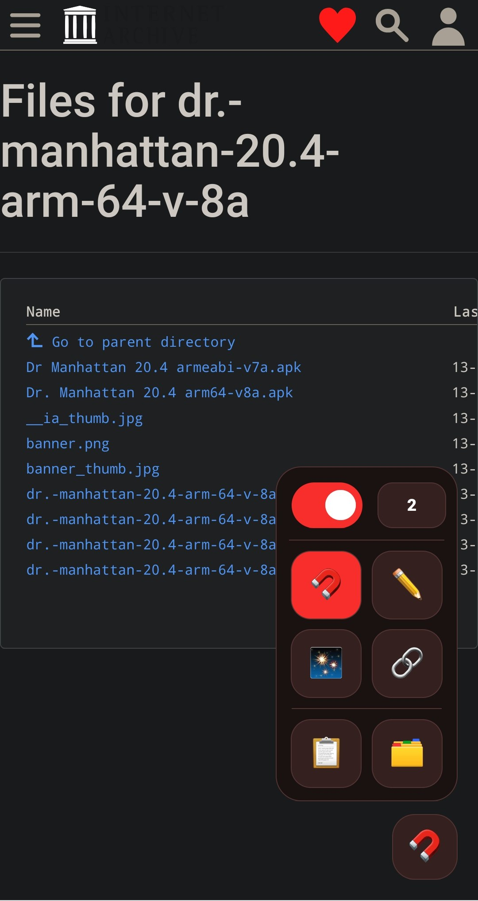

Your browser. Your links. Zero tab chaos.
MagnoGrabr for Android is a lightweight link collector for – tap or sweep over the links you want, then sort the results, remove duplicates and export the list
Free and open source · Made for on Android

screenshots/android.png
-
Built for AndroidRuns in on your phone
-
No accountNo ads, no sign-up, no analytics
-
Open sourceCode on GitHub
-
Stays in your profileYour collection never goes to a separate service
Catch the good links
Save useful links without breaking your browsing flow. Open the on-page MagnoGrabr panel and pick your move
Grab
Tap links to save them as you browse
Draw
Sweep over a group of links to capture them together
Smart Grab
Find similar links, review the matches, then save
Extract page
Collect links from the current page in one go
The panel stays tucked away until you need it – page tools can be switched off any time
From browsing to a clean list in three steps
You stay on the page you're already reading, MagnoGrabr does the collecting
Open the panel
Open the on-page MagnoGrabr panel and choose a tool: Grab, Draw, Smart Grab or Extract page
Catch the links
Tap the links you want, sweep over a group, or let Smart Grab find similar ones and review the matches before saving
Use your list
Search, filter and select your links, then copy, export or clear them and start over
Everything you need to turn a page of links into a usable list
Capture without the tab chaos
Four tools for four situations, all one tap away in the on-page panel – hide the page tools whenever you don't need them
- Tap to grab single links
- Draw across a group to capture it together
- Smart Grab finds similar links for you to review
- Optional capture delay
Browse your collection by category, newest, oldest or name
Your links, sorted
Find what you saved fast, and see what a link is before you open it
- Search URLs, link text, filenames and source pages
- Filter by category; sort by newest, oldest or name
- Select links for bulk copy, export or removal
- View details and recategorize links
- Remove duplicates or clear out the collection
- Preview file size and filename when the server provides them
Take it with you
Export your list in the format the next tool expects, or just copy what you need
- Copy one link, selected links, or everything
- Export as plain text, CSV or JSON
- Set your default export format
Dark or light
Pick the appearance that suits your phone
Accent colors
Red, pink or blue, your call
Default export
Choose TXT, CSV or JSON once and forget it
Capture delay
Optionally slow capture down to avoid stray grabs
Why not just long-press every link?
You can, but it gets slow once there are more than a handful
| By hand | With MagnoGrabr | |
|---|---|---|
| Getting a link | Long-press, choose Copy link, switch apps, paste, repeat | Tap it |
| Groups of links | One at a time | Sweep over them with Draw |
| Whole pages | Not really possible | One tap on Extract page |
| Duplicates | Spot them yourself | Remove them in one go |
| File details | Open each link to find out | Filename and size shown when the server provides them |
| Output | Paste into a note | Export to TXT, CSV or JSON |
What people grab links for
Anything you'd otherwise long-press one link at a time
📥 Send links to a downloader
Extract a page, copy the whole list and paste it into your download app
🖼️ Gather image galleries
Draw across a gallery, then filter by Media to keep only the pictures
🔬 Archive your research
Tap sources as you read and export them to CSV or JSON for your notes
📚 Build a reading list
Let Smart Grab find similar article links, review them, then save
Private by design
Your collection and preferences stay in your profile, no account needed
For size and filename previews, MagnoGrabr may send a lightweight HEAD request directly to a captured link's server – your collection is not sent to a separate service
Powers the capture tools on the pages you visit
Only a lightweight HEAD request to a captured link's own server, for size and filename previews
None
Stays in your profile
Questions
Does it work in for Android?
Yes, that's what it's built for – install it from Add-ons on your phone and open the on-page panel from any page
Why does it need access to websites?
The capture tools run on the page you're viewing, so they need page access to see and save its links
Where are my links stored?
In your profile on your device. You can remove selected links or clear out the whole collection from the list
Why don't some links show a size or filename?
Those previews come from the link's own server, and not every server provides them
Can I hide the on-page tools?
Yes – the panel stays tucked away until you need it, and page tools can be switched off any time
Is there a desktop version?
Yes – the desktop version collects links as you hover over them
Is it free?
Yes, MagnoGrabr is free and open source
Part of the MagnoGrabr family
This is the Android-focused version of MagnoGrabr – same link-catching spirit, shaped for browsing on the go
Stop juggling tabs for links
Install MagnoGrabr for Android and collect your next list of links in seconds